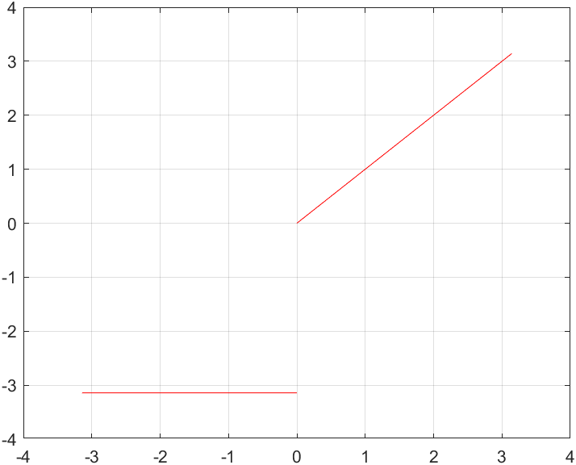
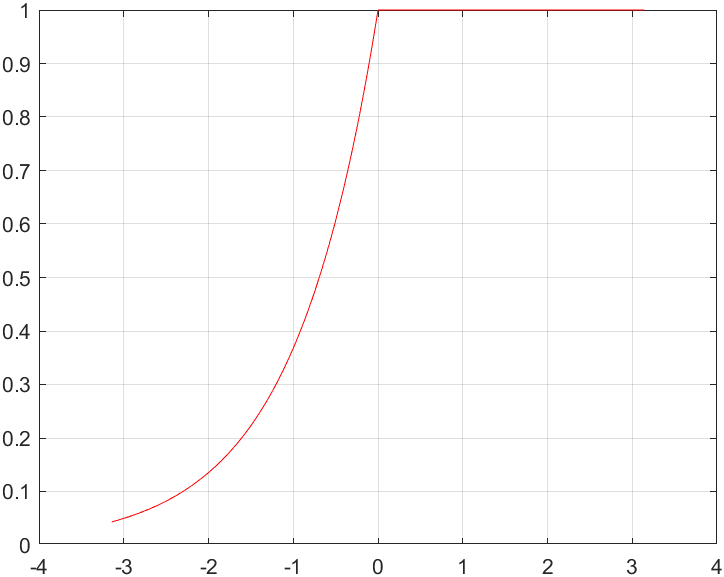

1Exercise 11.3
- 1.
设是平面上由简单闭曲线围成的区域.
- (2)
如果有连续的二阶导数，证明
(1.1)这里是曲线的单位外法向量，称为二维Laplace算子. 因此，当满足Laplace方程时，有.
- (3)
如果是单位常值向量，证明：
(1.2) - (4)
如果有连续的二阶导数，证明下列第二Green公式：
(1.3)
证明- (2)
设二维曲线单位法向，那么其逆时针方向的切向位矢微元为
(1.4)因此由Green公式，
(1.5) - (3)
记，则由第(1)问的结论，
(1.6) - (4)
由第(1)问的结论，
(1.7)
- (2)
2Exercise 11.7
- 1.
求下列曲线积分.
- (2)
，其中由点沿曲线到，再由沿直线到点；
解注意到微分式实际上为全微分，其原函数为
(2.1)故积分值只与初末态有关，即
(2.2) - (3)
，其中是柱面螺线上点到这一段.
解注意到微分式实际上为全微分，其原函数为
(2.3)故积分值只与初末态有关，即
(2.4)
注牢记我们为什么用Stokes定理：尽管场无旋与场有势等价，但对于简单的微分式（例如常见的多项式）或者结构明显的表达式（例如关于的偏导项），证明其为全微分同样可等价说明场有势. 因此我们更希望不引入额外的计算量，不采用Stokes公式而采用“积分+观察”的方法. 以第(1)题为例，我们可以先对积分，得到，当然如果在草稿纸上书写，为简洁起见，可不带上，心里记住就好. 接下来对求导，对比系数：
(2.5)再对求导，对比系数：
(2.6)从而可得原函数. 当然，即便是考试，哪怕你说由“惊人的注意力”看出其原函数也不会扣分，只要结果正确即可.
- (2)
- 1.
证明下列向量场是有势场，并求出它们的势函数.
- (3)
.
解注意到对任意路径，积分值
(2.7)仅与初态和末态有关，因此为有势场，其势函数为
(2.8) - (3)
- 1.
当取何值时，向量场是有势场，并求出这时的势函数.
解已知对于某一（些）的取值，必然为有势场，因此仅考虑旋度的分量：
(2.9)当时，
(2.10) - 1.
求下列全微分的原函数.
- (3)
.
解对积分，可得
(2.11)因此，代入得
(2.12)因此，代入得
(2.13)
- (3)
- 1.
验证下列积分与路径无关，并求出它们的值.
- (6)
.
解容易看出微分式为以下势函数的全微分：
(2.14)因此该积分值与路径无关、仅与初末态有关，即
(2.15) - (7)
，其中在球面上.
解容易看出微分式为以下势函数的全微分：
(2.16)因此该积分值与路径无关、仅与初末态有关，即
(2.17)
- (6)
- 1.
已知.
- (2)
求使线积分与路线无关，其中
(2.18)(2.19) - (3)
求.
解- (2)
由题意，选择任一闭区域，采用Green公式：
(2.20)由于区域选择任意，要求被积函数对恒为零，从而
(2.21)利用定解条件，解得，将其代入第一个方程，可得
(2.22)因此方程的Wronski行列式为
(2.23)其特解为
(2.24)因此方程的特解为
(2.25) - (3)
这一小问实际上可以绕过上一小问需要计算的. 由题意，该积分值与路径无关，因此取从到的直线段，则有
(2.26)
- (2)
- 1.
设具有二阶连续导数，，且
(2.27)为一全微分方程. 求及此全微分方程的通解.
解由题意，该全微分方程可写为，即该方程的通解. 利用二阶混合偏导次序可交换，可得
(2.28)该方程的通解为，特解为，代入定解条件得
(2.29)从而全微分方程的通解为
(2.30)
3Exercise 12.1
- 1.
作出下列周期的函数的图形，并把它们展开成Fourier级数（收敛情况）.
- (2)
在中，
- (3)
在中，.
解题中给出的函数图像如下图所示.


- (2)
由于在上分段可微，由Dirichlet定理，可将在上作Fourier展开，对应系数为
(3.1)(3.2)(3.3)因此
(3.4) - (3)
由于在上具有一阶连续导数，且为偶函数，由Dirichlet定理，在上作Fourier展开时的系数为
(3.5)(3.6)同时，因此
(3.7)
- (2)
- 1.
已知函数的Fourier展开式，求常数的值.
- (2)
，其中.
解由于函数的Fourier级数收敛于其自身，分别计算和处的函数值：
(3.8) - (3)
，其中.
解将在上作Fourier展开，其系数且
(3.9)解得.
- (2)
- 1.
设是一个以为周期的函数.
- (2)
如果，试证明在内的Fourier展开只含有奇次谐波，即
(3.10) - (3)
如果，试证明在内的Fourier展开只含有偶次谐波，即
(3.11)
证明- (2)
由题意，
(3.12)因此，类似.
- (3)
由题意，
(3.13)因此，类似.
- (2)
- 1.
已知周期为的函数的Fourier系数是和，试证明“平移”了的函数的Fourier系数是
(3.14)(3.15)证明利用的周期性，
(3.16)类似.
- 1.
将在上展开成Fourier级数，并利用其结果求下列级数的和：
- (2)
.
- (3)
.
解由于在上一阶连续可微，且为偶函数，由Dirichlet定理，其Fourier展开系数为
(3.17)(3.18)且，因此
(3.19)- (2)
容易计算
(3.20) - (3)
由Parseval等式，
(3.21)从中解得
(3.22)
- (2)